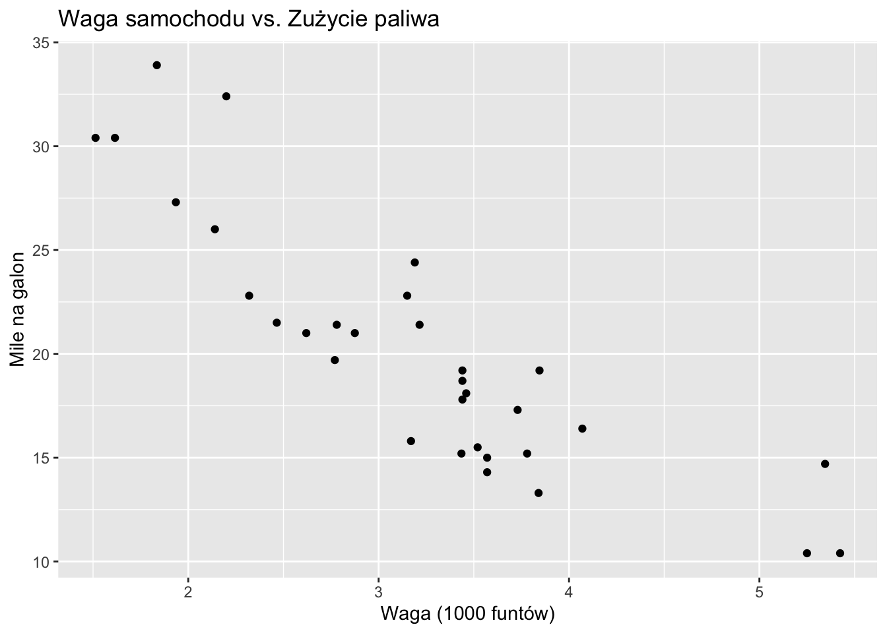
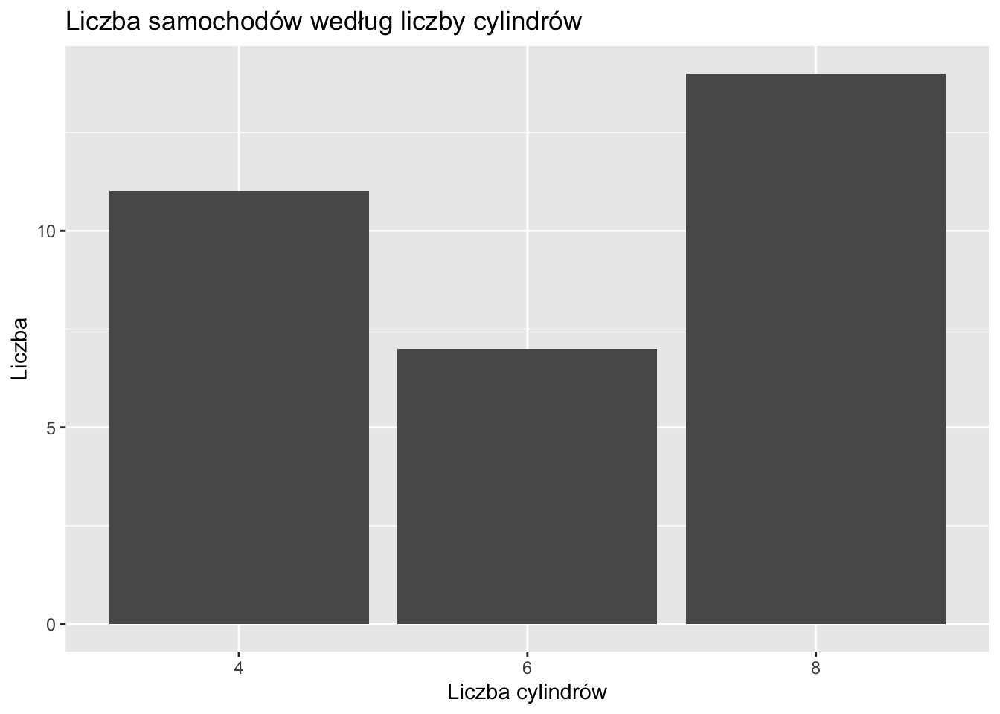
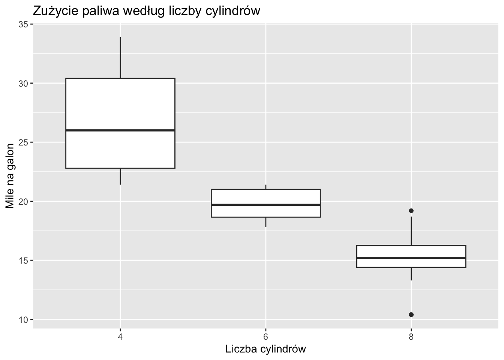

graph TD
A[Data Generating Process DGP]
B(Population)
C[Sample]
A -->|Generates| B
B -->|Sampled from| C
C -.->|Inference| B
C -.->|Inference| A
B -.->|Inference| A
classDef dgp fill:#f9f,stroke:#333,stroke-width:4px;
classDef pop fill:#bbf,stroke:#333,stroke-width:2px;
classDef sam fill:#bfb,stroke:#333,stroke-width:2px;
class A dgp;
class B pop;
class C sam;
2 Wprowadzenie do Nauki o Danych i Statystyki dla Nauk Społecznych
Ten rozdział wprowadza studentów w podstawy nauki o danych i statystyki – obszary wiedzy kluczowe dla badaczy nauk społecznych.
2.1 Czym są Statystyka i Nauka o Danych?
Important
Statystyka i data science to sztuka i nauka wydobywania wiedzy z danych – pomagają zrozumieć świat poprzez metodyczną analizę zebranych informacji.
Nauka o danych i statystyka stanowią kluczowe narzędzia badawcze, które umożliwiają lepsze zrozumienie zjawisk społecznych, niezależnie od specjalizacji: politologii, ekonomii, socjologii czy innych nauk społecznych. Pozwalają analizować trendy, zachowania społeczne i efekty różnych polityk, dostarczając solidnych podstaw do formułowania wniosków opartych na danych empirycznych.
Statystyka zapewnia matematyczne fundamenty analizy danych – uczy projektowania badań, syntetyzowania zebranych informacji i weryfikowania hipotez badawczych. Nauka o danych rozszerza te możliwości, integrując statystykę z umiejętnościami programistycznymi i wiedzą dziedzinową, co pozwala efektywnie pracować nawet ze złożonymi zbiorami danych.
Wspólnie te dziedziny znacząco zwiększają możliwości badawcze. Umożliwiają gromadzenie i analizę dużych zbiorów danych, tworzenie czytelnych wizualizacji złożonych informacji, odkrywanie niewidocznych na pierwszy rzut oka prawidłowości w zachowaniach społecznych oraz ewaluację skuteczności różnych rozwiązań. Te umiejętności mają szerokie zastosowanie – od analizy procesów wyborczych i zjawisk ekonomicznych po badanie nierówności społecznych.
W epoce cyfrowej, charakteryzującej się gwałtownym przyrostem dostępnych danych, kompetencje w zakresie ich analizy stają się niezbędnym elementem warsztatu współczesnych badaczy i specjalistów nauk społecznych.
Note
W naukach społecznych nauka o danych stanowi zestaw metod do rozwiązywania złożonych problemów badawczych – łączy podejście statystyczne, narzędzia informatyczne i wiedzę specjalistyczną, by skuteczniej analizować procesy społeczne.
2.2 Związek Między Statystyką a Nauką o Danych
Statystyka i data science to ściśle powiązane dziedziny o znaczącym obszarze wspólnym. Zamiast traktować je jako całkowicie odrębne dyscypliny, warto postrzegać je jako komplementarne podejścia w spektrum metod analizy danych:
- Opiera się na podstawach matematycznych i teorii prawdopodobieństwa
- Koncentruje się na testowaniu hipotez, estymacji parametrów i wnioskowaniu statystycznym
- W naukach społecznych znajduje zastosowanie głównie do analizy danych z badań ankietowych, eksperymentów i obserwacji
- Stanowi metodologiczny fundament analizy ilościowej
- Łączy metody statystyczne z umiejętnościami programistycznymi i wiedzą dziedzinową
- Wykorzystuje nowoczesne techniki jak uczenie maszynowe i analiza dużych zbiorów danych
- W naukach społecznych umożliwia pracę z danymi cyfrowymi, tekstowymi i złożonymi wzorcami interakcji społecznych
- Rozwija i rozszerza tradycyjne podejścia statystyczne, dostosowując je do współczesnych wyzwań badawczych
Nauka o danych może być postrzegana jako współczesne rozwinięcie tradycyjnej statystyki, które ewoluowało w odpowiedzi na nowe możliwości technologiczne i potrzebę analizy coraz bardziej złożonych danych społecznych.
2.3 Podstawowe Koncepcje w Nauce o Danych i Statystyce
2.3.1 Dane i Populacje (Data and Populations) – kluczowe pojęcia
Important
Dane: Informacje zebrane w procesie badawczym – mogą to być odpowiedzi z kwestionariuszy, wyniki eksperymentów, wskaźniki ekonomiczne, treści z mediów społecznościowych lub inne mierzalne obserwacje.
Populacja: Pełny zbiór jednostek (osób, instytucji, wydarzeń), których dotyczy badanie – cała grupa, o której badacz chce formułować wnioski.
- Przykład: W badaniu preferencji wyborczych populację stanowią wszyscy uprawnieni do głosowania obywatele danego kraju.
Próba: Podzbiór populacji poddany bezpośredniemu badaniu. Reprezentatywna próba odzwierciedla kluczowe cechy populacji w odpowiednich proporcjach. Właściwy dobór próby uwzględnia zróżnicowanie jednostek pod względem istotnych zmiennych demograficznych i innych charakterystyk.
- Przykład: Zamiast badać wszystkich uprawnionych wyborców, analizuje się 1500 losowo wybranych osób z uwzględnieniem odpowiedniego rozkładu wieku, płci, wykształcenia i regionu zamieszkania.
Prawidłowo dobrana próba umożliwia wnioskowanie o całej populacji przy znaczącej optymalizacji zasobów badawczych.
Proces Generowania Danych (PGD) i Superpopulacja: Rozszerzenie Tradycyjnych Koncepcji
W tradycyjnej statystyce pracujemy z dwoma kluczowymi pojęciami:
- Populacja: Cała grupa, którą chcemy badać.
- Próba: Podzbiór populacji, który faktycznie obserwujemy i analizujemy.
Współczesne badania często wymagają myślenia wykraczającego poza ten dychotomiczny podział. Tu wkraczają koncepcje Procesu Generowania Danych (PGD) i superpopulacji, pogłębiając nasze rozumienie danych i ich struktury.
2.3.2 Proces Generowania Danych (PGD; Data Generating Process, DGP)
Definicja formalna:
PGD to zbiór mechanizmów statystycznych i przyczynowych odpowiedzialnych za wytwarzanie obserwowanych wartości zmiennych w systemie, opisany najczęściej za pomocą funkcji matematycznych i rozkładów prawdopodobieństwa.
Intuicyjne wyjaśnienie:
PGD można postrzegać jako “czarną skrzynkę”, która przekształca przyczyny w skutki. To fundamentalny mechanizm, który produkuje dane obserwowane w rzeczywistym świecie - zarówno w naszej próbie, jak i w całej populacji, a także poza nią.
Przykład:
W badaniu zachowań wyborczych, PGD obejmowałby czynniki takie jak:
- Cechy demograficzne wyborców
- Warunki ekonomiczne
- Wydarzenia polityczne
- Wpływ mediów społecznościowych
- Historyczne trendy wyborcze
Wszystkie te czynniki kształtują zachowania wyborcze niezależnie od tego, czy dany wyborca został uwzględniony w badaniu, czy nie.
2.3.3 Superpopulacja
Definicja formalna:
Superpopulacja to hipotetyczna, nieskończona populacja, z której obserwowana populacja może być postrzegana jako próba losowa. Reprezentuje wszystkie potencjalne jednostki i wyniki, które mogłyby zostać wygenerowane przez ten sam PGD.
Intuicyjne wyjaśnienie:
Superpopulacja wykracza zarówno poza próbę, jak i obserwowalną populację, obejmując wszystkie potencjalne wyniki, które mogłyby wystąpić w podobnych warunkach lub procesach - zarówno teraz, jak i w przyszłości.
2.3.4 Porównanie podejść
2.3.4.1 1. Podejście tradycyjne vs. podejście superpopulacyjne
- Tradycyjne:
- Populacja: wszyscy zarejestrowani wyborcy w województwie
- Próba: 1000 ankietowanych wyborców
- Superpopulacyjne:
- Obserwowane dane: 1000 ankietowanych wyborców
- Populacja: wszyscy zarejestrowani wyborcy
- Superpopulacja: Wszyscy możliwi wyborcy i scenariusze głosowania, w tym przyszłe wybory i hipotetyczne konteksty polityczne
2.3.4.2 2. Gdy próba równa się populacji
W badaniach wszystkich 16 województw Polski:
- Tradycyjne spojrzenie: Brak rozróżnienia między próbą a populacją
- Spojrzenie superpopulacyjne: Traktuje te 16 województw jako “próbę” z teoretycznego zbioru wszystkich możliwych interakcji między województwami a polityką
2.3.5 Zastosowanie w praktyce
Badanie wpływu nowej polityki planowania urbanistycznego:
- Podejście tradycyjne:
- Populacja: Wszystkie miasta w kraju
- Próba: Miasta uwzględnione w badaniu
- Podejście superpopulacyjne:
- Obserwowane dane: Miasta w badaniu
- Populacja: Wszystkie obecne miasta
- Superpopulacja: Wszystkie miasta (istniejące lub potencjalne), w których można by zastosować podobne zasady planowania
PGD w tym przypadku byłby złożonym zestawem czynników, które determinują, jak polityki planowania urbanistycznego wpływają na rozwój miast.
2.3.6 Kluczowe aspekty metodologiczne
Zakres i ograniczenia:
Badacze powinni jasno określić, jakie jednostki lub procesy starają się zrozumieć, wykraczając poza samo opisanie próby i populacji.Możliwość uogólnienia:
Przy formułowaniu wniosków dotyczących superpopulacji, należy wyraźnie określić granice, w których ustalenia mają zastosowanie.Specyfika kontekstu:
Choć koncepcja superpopulacji pozwala na szersze wnioskowanie, ważne jest zrozumienie, że PGD może się różnić w zależności od kontekstu.
2.3.7 Przykład: Jakość Pizzy w Nowym Jorku
Populacja:
Wszystkie obecnie działające pizzerie w Nowym Jorku.
Próba:
50 losowo wybranych pizzerii z różnych dzielnic.
Superpopulacja:
Wszystkie możliwe pizzerie, które mogłyby istnieć w Nowym Jorku:
- Obecnie działające
- Przyszłe (nieotwarte)
- Historyczne (zamknięte)
- Hipotetyczne (w alternatywnych warunkach)
Proces Generowania Danych (PGD):
Czynniki wpływające na jakość pizzy:
- Składniki i ich jakość
- Umiejętności i doświadczenie szefów kuchni
- Sprzęt i infrastruktura
- Metody przygotowania i przepisy
- Czynniki środowiskowe (np. jakość wody)
- Wpływy kulturowe i tradycje
- Uwarunkowania ekonomiczne (koszty, czynsze)
PGD jest jak “przepis na jakość pizzy”, który ma zastosowanie do wszystkich potencjalnych pizzerii w superpopulacji, nie tylko do obecnie istniejących lokali.
Objaśnienie diagramu PGD, Populacji i Próby
Diagram przedstawia relacje między Procesem Generującym Dane (PGD), populacją i próbą, wraz ze ścieżkami wnioskowania:
- Relacje bezpośrednie (ciągłe strzałki):
- PGD generuje populację
- Z populacji pobierane są próby
- Ścieżki wnioskowania (przerywane strzałki):
- Od Próby do Populacji: Tradycyjne wnioskowanie statystyczne
- Od Próby do PGD: Wnioskowanie o podstawowym procesie na podstawie danych z próby
- Od Populacji do PGD: Wnioskowanie o PGD przy użyciu pełnych danych populacji

2.4 Dane i Populacje
Dane stanowią podstawę analizy statystycznej. Aby lepiej zrozumieć ich rolę, warto poznać kluczowe pojęcia.
2.4.1 Rodzaje Danych
- Dane pierwotne (Primary data): Zebrane bezpośrednio w określonym celu badawczym, np. przeprowadzenie własnej ankiety
- Dane wtórne (Secondary data): Uzyskane z istniejących źródeł, np. baz danych czy publikacji innych badaczy
Populacja i Próba - fundamentalne rozróżnienie
- Populacja: Pełny zbiór wszystkich elementów/jednostek, o których chcemy wnioskować (np. wszyscy dorośli obywatele Polski)
- Próba: Podzbiór populacji, który badamy w praktyce (np. 1000 losowo wybranych dorosłych obywateli Polski)
W praktyce badawczej niemal zawsze analizujemy próbę, a następnie wnioskujemy o populacji.
2.4.2 Zmienne i Stałe
Zmienne to cechy, które mogą przyjmować różne wartości w zbiorze danych. Stanowią one obiekt naszych badań i analiz.
2.4.2.1 Klasyfikacja Zmiennych
- Zmienne Ilościowe (Quantitative):
- Ciągłe (Continuous): Mogą przyjmować dowolną wartość w określonym przedziale, np. wzrost, waga, temperatura
- Dyskretne (Discrete): Przyjmują tylko określone wartości (zwykle liczby całkowite), np. liczba dzieci, liczba błędów
- Zmienne Jakościowe (Qualitative):
- Nominalne (Nominal): Kategorie bez naturalnej kolejności, np. grupa krwi, płeć, województwo
- Porządkowe (Ordinal): Kategorie z naturalną kolejnością, np. wykształcenie (podstawowe, średnie, wyższe), skala Likerta (1-5)
Stałe to wartości, które pozostają niezmienne w trakcie analizy i często służą jako punkty odniesienia.
2.5 Parametry Populacji i Związane Pojęcia - Kluczowe Rozróżnienia
W statystyce istnieje kilka podobnie brzmiących pojęć, które często są mylone. Poniżej przedstawiam ich klarowne rozróżnienie:
2.5.1 Parametr Populacji i Estymand
Parametr populacji to wartość liczbowa opisująca cechę całej populacji. Kluczowe cechy:
- Dotyczy całej populacji, nie tylko próby
- Jest zwykle oznaczany greckimi literami (μ, σ, π, ρ)
- W większości przypadków pozostaje nieznany (nie możemy zbadać całej populacji)
- Jest determinowany przez rzeczywisty Proces Generujący Dane (DGP)
Estymand (Estimand) to konkretny parametr populacji lub funkcja parametrów, którą chcemy oszacować. Jest to cel naszej estymacji.
Przykłady parametrów populacji:
- Średnia populacji (μ): Prawdziwa średnia wartość cechy w populacji
- Wariancja populacji (σ²): Prawdziwa miara zmienności w populacji
- Proporcja populacji (p): Prawdziwa proporcja jednostek w populacji posiadających daną cechę
Ważne rozróżnienie!
Estymand (parametr populacji) to wartość w populacji, którą chcemy poznać, ale która pozostaje dla nas nieznana. Jest to nasz cel badawczy.
2.5.2 Estymator (Statystyka)
Estymator to funkcja matematyczna (wzór, procedura), która na podstawie danych z próby dostarcza oszacowania parametru populacji. Estymator jest zmienną losową, ponieważ jego wartość zależy od konkretnej próby.
Statystyka to każda miara obliczona na podstawie danych z próby. Gdy statystyka służy do oszacowania parametru populacji, nazywamy ją estymatorem.
Przykłady estymatorów (statystyk):
- Średnia z próby: \bar{x} = \frac{1}{n}\sum_{i=1}^n x_i (estymator średniej populacji μ)
- Wariancja z próby: s^2 = \frac{1}{n-1}\sum_{i=1}^n (x_i - \bar{x})^2 (estymator wariancji populacji σ²)
- Proporcja z próby: \hat{p} = \frac{x}{n} (estymator proporcji populacji p)
Estymator jako procedura
Estymator należy rozumieć jako przepis na obliczenie wartości na podstawie próby. Ten sam estymator zastosowany do różnych prób da różne wyniki.
Przykład: Estymator średniej \bar{x} = \frac{1}{n}\sum_{i=1}^n x_i to procedura “zsumuj wszystkie wartości i podziel przez ich liczbę”.
2.5.3 Oszacowanie (Estymata)
Oszacowanie (estymata, ang. estimate) to konkretna wartość liczbowa otrzymana po zastosowaniu estymatora do określonej próby. Jest to pojedyncza liczba, będąca realizacją zmiennej losowej, jaką jest estymator.
Przykład rozróżnienia tych pojęć
- Estymand: Średnia wysokość wszystkich dorosłych Polaków (μ) - nieznana wartość
- Estymator: Wzór na średnią z próby \bar{x} = \frac{1}{n}\sum_{i=1}^n x_i - procedura obliczeniowa
- Oszacowanie (estymata): 173.5 cm - konkretna wartość otrzymana z próby
Różne próby dadzą różne oszacowania tego samego estymandy przy użyciu tego samego estymatora.
2.5.4 Właściwości Estymatorów
Dobry estymator powinien posiadać korzystne właściwości statystyczne:
Nieobciążoność (Unbiasedness): Estymator jest nieobciążony, jeśli jego wartość oczekiwana (średnia z wielu prób) jest równa estymandzie. Formalnie: E(θ̂) = θ
Efektywność (Efficiency): Estymator jest efektywny, jeśli ma najmniejszą możliwą wariancję spośród wszystkich nieobciążonych estymatorów
Zgodność (Consistency): Estymator jest zgodny, jeśli wraz ze wzrostem wielkości próby jego wartość zbliża się do prawdziwej wartości parametru
Dostateczność (Sufficiency): Estymator jest dostateczny, jeśli wykorzystuje wszystkie dostępne informacje z próby odnośnie szacowanego parametru
2.6 Modele Statystyczne i Wnioskowanie
2.6.1 Modele Statystyczne
Model statystyczny to matematyczna reprezentacja rzeczywistości, która opisuje relacje między zmiennymi i strukturę danych. Pozwala na opisanie procesu generującego dane (DGP) i wnioskowanie o parametrach.
Note
Model statystyczny składa się z: 1. Struktury probabilistycznej (np. założenie o rozkładzie normalnym) 2. Parametrów, które chcemy oszacować 3. Relacji między zmiennymi (np. liniowa, wykładnicza)
Przykład modelu regresji liniowej: y = \beta_0 + \beta_1x + \epsilon, gdzie \epsilon \sim N(0, \sigma^2)
W tym modelu: - \beta_0 i \beta_1 to parametry (estymandy), które chcemy oszacować - \epsilon to składnik losowy reprezentujący niewyjaśnioną zmienność - Zakładamy normalność rozkładu błędów losowych
2.6.2 Wnioskowanie Przyczynowe vs. Predykcyjne
W analizie statystycznej możemy mieć dwa główne cele:
- Wnioskowanie przyczynowe: Ustalenie, czy zmienna X powoduje zmianę w zmiennej Y
- Wymaga dodatkowych założeń lub specjalnych projektów badawczych
- Umożliwia przewidywanie efektów interwencji
- Wnioskowanie predykcyjne: Przewidywanie wartości Y na podstawie X
- Nie musi zakładać związku przyczynowego
- Koncentruje się na dokładności przewidywań
Korelacja ≠ Przyczynowość
Jednym z najczęstszych błędów w statystyce jest interpretowanie korelacji jako dowodu na przyczynowość. Dwie zmienne mogą być silnie skorelowane z powodu:
- Zmiennej zakłócającej (confounder), która wpływa na obie zmienne
- Odwróconej przyczynowości (Y wpływa na X, a nie odwrotnie)
- Przypadku (korelacja pozorna)
2.6.3 Problemy Wnioskowania Przyczynowego
Fundamentalnym problemem wnioskowania przyczynowego jest niemożność obserwowania kontrfaktów (alternatywnych scenariuszy). Dla danej jednostki możemy zaobserwować tylko jeden potencjalny wynik.

Przykład: - Obserwujemy osobę, która skończyła studia i zarabia 8000 zł - Nie możemy zaobserwować, ile ta sama osoba zarabiałaby, gdyby nie skończyła studiów
Metody przyczynowe próbują rozwiązać ten problem przez: 1. Randomizowane eksperymenty 2. Zmienne instrumentalne 3. Metody dopasowania 4. Analizę nieciągłości regresji 5. Różnicę w różnicach
Wnioskowanie przyczynowe jest utrudnione przez różne problemy, takie jak:


2.7 Wnioskowanie Statystyczne
Wnioskowanie statystyczne to proces formułowania wniosków o populacji na podstawie danych z próby. Obejmuje dwa główne obszary:
2.7.1 1. Estymacja
Estymacja to proces szacowania nieznanych parametrów populacji na podstawie danych z próby. Wyróżniamy:
- Estymację punktową: Podajemy pojedynczą wartość (oszacowanie) jako najlepsze przybliżenie parametru
- Estymację przedziałową: Konstruujemy przedział ufności, który wskazuje zakres możliwych wartości parametru zgodnych z naszymi danymi
Przykład przedziału ufności: “95% przedział ufności dla średniego wzrostu dorosłych Polaków wynosi (173 cm, 175 cm)”.
Poprawna interpretacja przedziału ufności: Gdybyśmy wielokrotnie pobierali próby z tej samej populacji i dla każdej z nich konstruowali 95% przedział ufności według tej samej metody, to około 95% tak skonstruowanych przedziałów zawierałoby prawdziwą wartość parametru populacji.
Niepoprawna interpretacja: “Jest 95% szans, że prawdziwa średnia znajduje się w przedziale (173 cm, 175 cm)” – jest to błędne, ponieważ parametr populacji jest wartością stałą (choć nieznaną), a nie zmienną losową.
2.7.2 2. Testowanie Hipotez
Testowanie hipotez to formalna procedura weryfikacji przypuszczeń dotyczących parametrów populacji. Najlepiej zrozumieć tę koncepcję na konkretnym przykładzie:
Przykład: Test dwumianowy dla monety
Wyobraźmy sobie, że chcemy sprawdzić, czy moneta jest uczciwa.
Pytanie badawcze: Czy moneta jest uczciwa (prawdopodobieństwo wypadnięcia orła = 0.5)?
Formułujemy hipotezy:
- Hipoteza zerowa (H₀): p = 0.5 (moneta jest uczciwa)
- Hipoteza alternatywna (H₁): p ≠ 0.5 (moneta nie jest uczciwa)
Zbieramy dane: Rzucamy monetą 100 razy i otrzymujemy 65 orłów.
Analizujemy: Czy 65 orłów na 100 rzutów jest dowodem przeciwko hipotezie, że moneta jest uczciwa?
Rozumowanie:
- Jeśli moneta byłaby uczciwa (p = 0.5), to liczba orłów w 100 rzutach powinna podlegać rozkładowi dwumianowemu B(100, 0.5)
- Dla tego rozkładu oczekujemy średnio 50 orłów, z odchyleniem standardowym √(100 × 0.5 × 0.5) = 5
- Otrzymanie 65 orłów oznacza odchylenie o 3 odchylenia standardowe od oczekiwanej wartości
- Prawdopodobieństwo uzyskania 65 lub więcej orłów przy uczciwej monecie jest bardzo małe (p < 0.01)
Wniosek: Ponieważ zaobserwowany wynik jest bardzo mało prawdopodobny przy założeniu, że moneta jest uczciwa, odrzucamy hipotezę zerową i wnioskujemy, że moneta najprawdopodobniej nie jest uczciwa.
Ogólna procedura testowania hipotez:
- Formułujemy hipotezę zerową (H₀) i alternatywną (H₁)
- Wybieramy poziom istotności α (najczęściej 0.05)
- Zbieramy dane i obliczamy odpowiednią statystykę testową
- Obliczamy p-wartość (prawdopodobieństwo uzyskania naszych danych lub bardziej ekstremalnych, przy założeniu prawdziwości H₀)
- Podejmujemy decyzję: jeśli p < α, odrzucamy H₀ na rzecz H₁
Intuicja za testowaniem hipotez
Testowanie hipotez przypomina procedurę sądową: - H₀ odpowiada zasadzie “niewinny, dopóki nie udowodni się winy” (zakładamy, że parametr ma określoną wartość) - Dane stanowią “dowody” przeciwko H₀ - P-wartość określa, jak silne są te dowody - Jeśli dowody są wystarczająco mocne (p < α), “skazujemy” H₀ (odrzucamy ją) - Jeśli dowody nie są wystarczająco mocne, nie odrzucamy H₀ (ale nie udowadniamy jej prawdziwości)
Częste błędy interpretacji p-wartości i testów
- P-wartość NIE jest prawdopodobieństwem, że hipoteza zerowa jest prawdziwa
- P-wartość NIE jest prawdopodobieństwem popełnienia błędu przy odrzuceniu H₀
- Brak odrzucenia H₀ NIE oznacza jej udowodnienia (brak dowodów przeciwko oskarżonemu nie dowodzi jego niewinności)
- Bardzo mała p-wartość NIE oznacza dużego efektu praktycznego (istotność statystyczna ≠ istotność praktyczna)
- P-wartość zależy od wielkości próby - przy bardzo dużych próbach nawet małe, nieistotne praktycznie różnice mogą być statystycznie istotne
Definicja p-wartości: Prawdopodobieństwo zaobserwowania wyniku co najmniej tak ekstremalnego jak uzyskany, przy założeniu prawdziwości hipotezy zerowej.
Typy błędów w testowaniu hipotez
- Błąd I rodzaju (α): Odrzucenie prawdziwej hipotezy zerowej (“skazanie niewinnego”)
- Prawdopodobieństwo tego błędu kontrolujemy poprzez poziom istotności α
- Błąd II rodzaju (β): Nieodrzucenie fałszywej hipotezy zerowej (“uniewinnienie winnego”)
- Prawdopodobieństwo uniknięcia tego błędu (1-β) nazywamy mocą testu
- Moc testu zwiększa się wraz z wielkością próby i wielkością efektu
2.8 Mocne Podstawy Dobrego Badania
Aby przeprowadzić rzetelne badanie statystyczne, należy zadbać o:
- Reprezentatywność próby: Próba powinna dobrze odzwierciedlać badaną populację
- Odpowiedni rozmiar próby: Większe próby dają dokładniejsze oszacowania i większą moc statystyczną
- Kontrolę zmiennych zakłócających: Zarówno w projektowaniu badania, jak i analizie danych
- Właściwe metody statystyczne: Dopasowane do typu danych i pytań badawczych
- Przejrzystą interpretację: Uwzględniającą ograniczenia badania i alternatywne wyjaśnienia
Podsumowanie kluczowych pojęć często mylonych przez studentów:
| Pojęcie | Definicja | Przykład |
|---|---|---|
| Parametr populacji (Estymand) | Wartość charakteryzująca populację, zwykle nieznana | μ (średnia populacji) |
| Estymator (Statystyka) | Funkcja/procedura szacowania parametru na podstawie próby | \bar{x} = \frac{1}{n}\sum_{i=1}^n x_i |
| Oszacowanie (Estymata) | Konkretna wartość uzyskana po zastosowaniu estymatora do próby | \bar{x} = 173.5 cm |
| Błąd standardowy | Miara zmienności estymatora między próbami | SE(\bar{x}) = \frac{s}{\sqrt{n}} |
| Przedział ufności | Zakres wartości, który z określonym prawdopodobieństwem zawiera parametr | (173 cm, 175 cm) |
| P-wartość | Prawdopodobieństwo zaobserwowania danych przy założeniu H₀ | p = 0.03 |
2.9 Główne Komponenty Procesu Badawczego w Nauce o Danych
2.9.1 Zbieranie Danych
- Metody eksperymentalne: Kontrolowane badania z manipulacją zmiennych
- Badania obserwacyjne: Gromadzenie danych bez ingerencji badacza
- Ankiety i wywiady: Zbieranie danych bezpośrednio od respondentów
- Dane administracyjne: Wykorzystanie istniejących rejestrów i baz danych
- Zbieranie danych cyfrowych: Dane z internetu, mediów społecznościowych, czujników IoT
2.9.2 Przetwarzanie i Przygotowanie Danych
- Czyszczenie danych: Identyfikacja i korekta błędów, niespójności, duplikatów
- Obsługa brakujących wartości: Imputacja, usuwanie obserwacji, analiza braków
- Transformacja danych: Normalizacja, standaryzacja, przekształcenia rozkładów
- Inżynieria cech: Tworzenie nowych zmiennych na podstawie istniejących
- Redukcja wymiarowości: Uproszczenie danych z zachowaniem istotnych informacji
2.9.3 Analiza Danych i Wnioskowanie
- Eksploracyjna analiza danych (EDA): Badanie struktury danych, wykrywanie wzorców
- Modelowanie statystyczne: Budowa modeli opisujących relacje między zmiennymi
- Wnioskowanie statystyczne: Testowanie hipotez, przedziały ufności, wnioskowanie przyczynowe
- Uczenie maszynowe: Wykorzystanie algorytmów do automatycznego uczenia się z danych
- Interpretacja wyników: Nadawanie znaczenia odkrytym zależnościom
2.9.4 Komunikacja i Wdrożenie Wyników
- Wizualizacja danych: Przekazywanie wyników w formie graficznej
- Raportowanie: Przygotowanie raportów, artykułów, prezentacji
- Podejmowanie decyzji: Wykorzystanie wyników analizy do praktycznych działań
- Wdrażanie modeli: Implementacja rozwiązań w realnych systemach
- Ewaluacja i monitoring: Ocena skuteczności wdrożonych rozwiązań
Od teorii do praktyki
W praktyce proces badawczy jest iteracyjny. Wyniki analizy danych często prowadzą do nowych pytań, dodatkowego zbierania danych lub modyfikacji modeli. Dobry badacz musi być gotowy na wielokrotne przechodzenie między tymi etapami.
2.10 Narzędzia do Nauki o Danych w Naukach Społecznych
W tym kursie będziemy głównie używać R do naszej analizy danych, ponieważ jest on szeroko stosowany w badaniach nauk społecznych.
2.10.1 R w Analizie Danych Nauk Społecznych
R oferuje potężne możliwości dla badań w naukach społecznych, od manipulacji danymi po zaawansowane modelowanie statystyczne.
Kliknij, aby pokazać/ukryć kod R
library(tidyverse)── Attaching core tidyverse packages ──────────────────────── tidyverse 2.0.0 ──
✔ dplyr 1.1.4 ✔ readr 2.1.5
✔ forcats 1.0.0 ✔ stringr 1.5.1
✔ ggplot2 3.5.1 ✔ tibble 3.2.1
✔ lubridate 1.9.3 ✔ tidyr 1.3.1
✔ purrr 1.0.2
── Conflicts ────────────────────────────────────────── tidyverse_conflicts() ──
✖ dplyr::filter() masks stats::filter()
✖ dplyr::lag() masks stats::lag()
ℹ Use the conflicted package (<http://conflicted.r-lib.org/>) to force all conflicts to become errorsKliknij, aby pokazać/ukryć kod R
# Set seed for reproducibility
set.seed(42)
# Generate example data with a Simpson's Paradox
n <- 1000
data <- tibble(
age_group = sample(c("Young", "Middle", "Old"), n, replace = TRUE, prob = c(0.3, 0.4, 0.3)),
education_years = case_when(
age_group == "Young" ~ rnorm(n, mean = 10, sd = 1),
age_group == "Middle" ~ rnorm(n, mean = 13, sd = 1),
age_group == "Old" ~ rnorm(n, mean = 16, sd = 1)
),
income = case_when(
age_group == "Young" ~ 70000 + 1000 * education_years + rnorm(n, mean = 0, sd = 5000),
age_group == "Middle" ~ 50000 + 1000 * education_years + rnorm(n, mean = 0, sd = 5000),
age_group == "Old" ~ 30000 + 1000 * education_years + rnorm(n, mean = 0, sd = 5000)
)
)
# Basic data summary
summary(data) age_group education_years income
Length:1000 Min. : 6.628 Min. :34068
Class :character 1st Qu.:10.913 1st Qu.:51508
Mode :character Median :13.004 Median :63376
Mean :12.986 Mean :63307
3rd Qu.:14.934 3rd Qu.:75023
Max. :18.861 Max. :96620 Kliknij, aby pokazać/ukryć kod R
# Correlation analysis
cor(data %>% select(education_years, income)) education_years income
education_years 1.0000000 -0.8152477
income -0.8152477 1.0000000Kliknij, aby pokazać/ukryć kod R
# Overall trend (Simpson's Paradox)
overall_plot <- ggplot(data, aes(x = education_years, y = income)) +
geom_point(alpha = 0.5) +
geom_smooth(method = "lm", se = FALSE, color = "red") +
labs(title = "Overall Relationship between Education and Income",
subtitle = "Simpson's Paradox: Appears negative",
x = "Years of Education", y = "Income") +
theme_minimal()
# Trend by age group (Resolving Simpson's Paradox)
grouped_plot <- ggplot(data, aes(x = education_years, y = income, color = age_group)) +
geom_point(alpha = 0.5) +
geom_smooth(method = "lm", se = FALSE) +
labs(title = "Relationship between Education and Income by Age Group",
subtitle = "Resolving Simpson's Paradox: Positive relationship within groups",
x = "Years of Education", y = "Income") +
theme_minimal()
# Statistical analysis
model_overall <- lm(income ~ education_years, data = data)
model_by_age <- lm(income ~ education_years + age_group, data = data)
# Print results
print(overall_plot)`geom_smooth()` using formula = 'y ~ x'
Kliknij, aby pokazać/ukryć kod R
print(grouped_plot)`geom_smooth()` using formula = 'y ~ x'
Kliknij, aby pokazać/ukryć kod R
print(summary(model_overall))
Call:
lm(formula = income ~ education_years, data = data)
Residuals:
Min 1Q Median 3Q Max
-24451 -5439 235 5262 34328
Coefficients:
Estimate Std. Error t value Pr(>|t|)
(Intercept) 121814.7 1339.5 90.94 <2e-16 ***
education_years -4505.4 101.3 -44.47 <2e-16 ***
---
Signif. codes: 0 '***' 0.001 '**' 0.01 '*' 0.05 '.' 0.1 ' ' 1
Residual standard error: 7976 on 998 degrees of freedom
Multiple R-squared: 0.6646, Adjusted R-squared: 0.6643
F-statistic: 1978 on 1 and 998 DF, p-value: < 2.2e-16Kliknij, aby pokazać/ukryć kod R
print(summary(model_by_age))
Call:
lm(formula = income ~ education_years + age_group, data = data)
Residuals:
Min 1Q Median 3Q Max
-14827 -3369 118 3356 16388
Coefficients:
Estimate Std. Error t value Pr(>|t|)
(Intercept) 48270.8 2028.4 23.797 < 2e-16 ***
education_years 1135.5 154.6 7.345 4.26e-13 ***
age_groupOld -19942.8 593.2 -33.619 < 2e-16 ***
age_groupYoung 20461.1 600.7 34.064 < 2e-16 ***
---
Signif. codes: 0 '***' 0.001 '**' 0.01 '*' 0.05 '.' 0.1 ' ' 1
Residual standard error: 4950 on 996 degrees of freedom
Multiple R-squared: 0.8711, Adjusted R-squared: 0.8707
F-statistic: 2244 on 3 and 996 DF, p-value: < 2.2e-16Kliknij, aby pokazać/ukryć kod R
# Calculate and print correlations
overall_cor <- cor(data$education_years, data$income)
group_cors <- data %>%
group_by(age_group) %>%
summarize(correlation = cor(education_years, income))
print("Overall correlation:")[1] "Overall correlation:"Kliknij, aby pokazać/ukryć kod R
print(overall_cor)[1] -0.8152477Kliknij, aby pokazać/ukryć kod R
print("Correlations by age group:")[1] "Correlations by age group:"Kliknij, aby pokazać/ukryć kod R
print(group_cors)# A tibble: 3 × 2
age_group correlation
<chr> <dbl>
1 Middle 0.185
2 Old 0.291
3 Young 0.223Ten przykład demonstruje podstawowe operacje na danych, statystyki opisowe i wizualizację danych przy użyciu R.
2.11 Wnioskowanie przyczynowe a badania obserwacyjne
W naukach społecznych i nie tylko, zrozumienie relacji między zmiennymi jest kluczowe. Dwa główne podejścia to wnioskowanie przyczynowe i badania obserwacyjne, każde z własnymi mocnymi stronami i ograniczeniami.
- Dąży do ustalenia związków przyczynowo-skutkowych
- Często obejmuje plany eksperymentalne lub zaawansowane techniki statystyczne
- Stara się odpowiedzieć na pytania “Co by było, gdyby?” i określić wpływ interwencji
- Przykłady: Randomizowane badania kontrolowane, projekty quasi-eksperymentalne, zmienne instrumentalne
- Badają relacje między zmiennymi bez bezpośredniej interwencji
- Opierają się na danych zebranych w naturalnych warunkach lub z istniejących zbiorów danych
- Mogą identyfikować korelacje i wzorce, ale mają trudności z ustaleniem przyczynowości
- Przykłady: Badania kohortowe, badania kliniczno-kontrolne, przekrojowe badania ankietowe
Pamiętaj: Korelacja nie implikuje przyczynowości
Fundamentalna zasada w badaniach głosi, że korelacja między dwiema zmiennymi niekoniecznie implikuje związek przyczynowy. Ta koncepcja jest kluczowa przy interpretacji wyników badań obserwacyjnych.
- Korelacja: Mierzy siłę i kierunek związku między zmiennymi
- Przyczynowość: Wskazuje, że zmiany w jednej zmiennej bezpośrednio powodują zmiany w drugiej
Chociaż silne korelacje mogą sugerować potencjalne związki przyczynowe, do ustalenia przyczynowości wymagane są dodatkowe dowody i rygorystyczne metody.
- Zmienne zakłócające: Niezmierzone czynniki wpływające zarówno na domniemaną przyczynę, jak i skutek
- Odwrotna przyczynowość: Domniemany skutek może w rzeczywistości powodować domniemaną przyczynę
- Błąd selekcji: Nielosowy dobór uczestników do grup badawczych
- Randomizowane badania kontrolowane (gdy są etyczne i wykonalne)
- Naturalne eksperymenty lub projekty quasi-eksperymentalne
- Dopasowanie według propensity score
- Analiza różnicy w różnicach
- Podejścia oparte na zmiennych instrumentalnych
- Skierowane grafy acykliczne (DAG) do wizualizacji relacji przyczynowych
Zrozumienie różnicy między wnioskowaniem przyczynowym a badaniami obserwacyjnymi jest kluczowe w naukach społecznych, gdzie względy etyczne często ograniczają manipulacje eksperymentalne. Badacze muszą starannie projektować badania i interpretować wyniki, aby uniknąć wprowadzających w błąd wniosków dotyczących przyczynowości.
2.12 Modele w Nauce: Od Deterministycznych do Stochastycznych
Modele są niezbędnymi narzędziami w badaniach naukowych, pomagając naukowcom reprezentować, rozumieć i przewidywać złożone zjawiska. Ta sekcja omawia główne typy modeli stosowanych w nauce, wraz z przykładami ich zastosowań. Należy pamiętać, że te kategorie często się nakładają, a wiele modeli naukowych łączy w sobie różne aspekty.
2.12.1 Modele Matematyczne
Modele matematyczne wykorzystują równania i koncepcje matematyczne do opisywania i analizowania systemów lub zjawisk. Można je podzielić na kilka podkategorii, choć należy pamiętać, że niektóre złożone modele mogą zawierać elementy z wielu kategorii:
2.12.1.1 a. Modele Deterministyczne
Modele deterministyczne dostarczają precyzyjnych przewidywań na podstawie zestawu zmiennych, bez uwzględniania losowości na poziomie makroskopowym.
Przykład: Prawa ruchu Newtona, które mogą precyzyjnie przewidzieć ruch obiektów pod wpływem znanych sił w mechanice klasycznej.
2.12.1.2 b. Modele Stochastyczne
Modele stochastyczne uwzględniają losowość i prawdopodobieństwo. Jednak kluczowe jest rozróżnienie dwóch fundamentalnie różnych typów modeli stochastycznych:
2.12.1.2.1 i. Klasyczne Modele Stochastyczne
Te modele zajmują się losowością wynikającą z niepełnej informacji lub złożonych interakcji w systemach klasycznych. Podstawowy system jest deterministyczny, ale praktyczne ograniczenia w pomiarach lub obliczeniach prowadzą do użycia opisów probabilistycznych.
Przykład: Modele regresji w statystyce, gdzie losowość reprezentuje niewyjaśnioną zmienność lub błąd pomiaru:
y = β_0 + β_1x + ε
Gdzie:
- y to zmienna zależna (np. wielkość popytu na dobro)
- x to zmienna niezależna (np. cena lub dochód konsumenta)
- β_0 i β_1 to parametry
- ε to składnik błędu, reprezentujący niewyjaśnioną zmienność
2.12.1.2.2 ii. Kwantowe Modele Stochastyczne
Te modele zajmują się fundamentalną, nieredukowalną losowością nieodłącznie związaną z systemami mechaniki kwantowej. Ta losowość nie wynika z braku informacji, ale jest podstawową cechą rzeczywistości kwantowej.
Przykład: Model Standardowy w fizyce cząstek elementarnych, który opisuje interakcje cząstek za pomocą kwantowej teorii pola. Na przykład, rozpad cząstki jest z natury probabilistyczny:
P(t) = e^{-t/τ}
Gdzie:
- P(t) to prawdopodobieństwo, że cząstka nie rozpadła się po czasie t
- τ to średni czas życia cząstki
2.12.1.3 c. Modele Symulacji Komputerowych
Symulacje komputerowe wykorzystują algorytmy i metody obliczeniowe oparte na modelach matematycznych do symulowania złożonych systemów i przewidywania ich zachowania w czasie. Mogą być deterministyczne lub stochastyczne.
Przykład: Modele klimatyczne symulujące system klimatyczny Ziemi, uwzględniające czynniki takie jak skład atmosfery, prądy oceaniczne i promieniowanie słoneczne do prognozowania przyszłych scenariuszy klimatycznych.
2.12.2 Modele Koncepcyjne
Modele koncepcyjne to abstrakcyjne reprezentacje systemów lub procesów, często wykorzystujące diagramy lub schematy blokowe do ilustrowania relacji między komponentami.
Przykład: Model obiegu wody w naukach o Ziemi, który ilustruje ciągły ruch wody w obrębie Ziemi i atmosfery poprzez procesy takie jak parowanie, opady i spływ powierzchniowy.
2.12.3 Modele Fizyczne
Modele fizyczne to namacalne reprezentacje obiektów lub systemów, często w formie pomniejszonej lub uproszczonej wersji rzeczywistego obiektu.
Przykład: Modele tunelu aerodynamicznego w badaniach aerodynamiki, używane do badania efektów przepływu powietrza wokół obiektów stałych i optymalizacji projektów samolotów, pojazdów lub budynków.
2.12.4 Modele Teoretyczne
Modele teoretyczne to abstrakcyjne ramy oparte na fundamentalnych zasadach i hipotezach, często używane do wyjaśniania obserwowanych zjawisk lub przewidywania nowych. Te modele często wykorzystują równania matematyczne i mogą być deterministyczne lub stochastyczne.
Przykład: Teoria ewolucji poprzez dobór naturalny, która dostarcza ram do zrozumienia różnorodności i adaptacji form życia w czasie.
2.12.5 Podsumowanie
Te różne formy modeli odgrywają kluczową rolę w badaniach naukowych, każda oferując unikalne zalety dla zrozumienia i przewidywania zjawisk naturalnych. Naukowcy często używają wielu typów modeli jednocześnie, aby uzyskać kompleksowy wgląd w złożone systemy i procesy.
Ważne jest, aby zdawać sobie sprawę, że te kategorie nie są wzajemnie wykluczające i często się nakładają:
- Modele matematyczne stanowią podstawę dla wielu innych typów modeli, w tym symulacji komputerowych i niektórych modeli teoretycznych.
- Modele symulacji komputerowych są zasadniczo modelami matematycznymi implementowanymi za pomocą metod obliczeniowych i mogą być deterministyczne lub stochastyczne.
- Modele teoretyczne często wykorzystują sformułowania matematyczne i mogą być implementowane jako symulacje komputerowe.
- Modele fizyczne mogą być projektowane na podstawie modeli matematycznych i mogą być używane do walidacji symulacji komputerowych.
Wybór typu modelu często zależy od konkretnego pytania badawczego, natury badanego systemu, dostępnych danych oraz zasobów obliczeniowych. W miarę postępu nauki granice między tymi typami modeli coraz bardziej się zacierają, prowadząc do coraz bardziej wyrafinowanych i interdyscyplinarnych podejść do modelowania złożonych zjawisk.
Kluczowe jest rozróżnienie różnych typów modeli stochastycznych. Klasyczne modele stochastyczne, takie jak te używane w analizie regresji, zajmują się losowością wynikającą z niepełnej informacji lub złożonych interakcji w systemach, które są zasadniczo deterministyczne. Z drugiej strony, kwantowe modele stochastyczne, jak te w fizyce cząstek, zajmują się fundamentalną, nieredukowalną losowością nieodłącznie związaną z systemami mechaniki kwantowej. To rozróżnienie odzwierciedla głębokie różnice między klasycznymi a kwantowymi paradygmatami w fizyce i podkreśla różnorodne sposoby, w jakie prawdopodobieństwo jest wykorzystywane w modelowaniu naukowym.
2.13 Zrozumienie Pozornych Korelacji, Zmiennych Zakłócających i Kolizyjnych (*)
W tej sekcji zbadamy trzy ważne pojęcia w analizie statystycznej: pozorne korelacje, zmienne zakłócające i zmienne kolizyjne. Zrozumienie tych pojęć jest kluczowe dla uniknięcia błędnej interpretacji danych i wyciągania nieprawidłowych wniosków z analiz statystycznych.
Zacznijmy od załadowania niezbędnych bibliotek:
library(tidyverse)
library(dagitty)
library(ggdag)
set.seed(123) # dla powtarzalności2.13.1 Pozorne Korelacje
Pozorne korelacje to związki między zmiennymi, które wydają się przyczynowe, ale w rzeczywistości są przypadkowe lub spowodowane przez niewidoczny trzeci czynnik.
2.13.1.1 Przykład: Sprzedaż lodów a przypadki utonięć
Stwórzmy zbiór danych, który pokazuje pozorną korelację między sprzedażą lodów a przypadkami utonięć:
n <- 100
dane_pozorne <- tibble(
temperatura = rnorm(n, mean = 25, sd = 5),
sprzedaz_lodow = 100 + 5 * temperatura + rnorm(n, sd = 10),
przypadki_utoniec = 1 + 0.5 * temperatura + rnorm(n, sd = 2)
)
ggplot(dane_pozorne, aes(x = sprzedaz_lodow, y = przypadki_utoniec)) +
geom_point() +
geom_smooth(method = "lm", se = FALSE) +
labs(title = "Pozorna Korelacja: Sprzedaż Lodów vs Przypadki Utonięć",
x = "Sprzedaż Lodów", y = "Przypadki Utonięć")`geom_smooth()` using formula = 'y ~ x'
Ten wykres pokazuje pozytywną korelację między sprzedażą lodów a przypadkami utonięć. Jednak ta relacja jest pozorna. Prawdziwą przyczyną obu zjawisk jest temperatura:
ggplot(dane_pozorne, aes(x = temperatura)) +
geom_point(aes(y = sprzedaz_lodow), color = "blue") +
geom_point(aes(y = przypadki_utoniec * 10), color = "red") +
geom_smooth(aes(y = sprzedaz_lodow), method = "lm", se = FALSE, color = "blue") +
geom_smooth(aes(y = przypadki_utoniec * 10), method = "lm", se = FALSE, color = "red") +
scale_y_continuous(
name = "Sprzedaż Lodów",
sec.axis = sec_axis(~./10, name = "Przypadki Utonięć")
) +
labs(title = "Temperatura jako Wspólna Przyczyna",
x = "Temperatura")`geom_smooth()` using formula = 'y ~ x'
`geom_smooth()` using formula = 'y ~ x'
2.13.2 Zmienne Zakłócające
Zmienna zakłócająca to zmienna, która wpływa zarówno na zmienną zależną, jak i niezależną, powodując pozorny związek.
2.13.2.1 Przykład: Edukacja, Dochód i Wiek
Stwórzmy zbiór danych, w którym wiek zakłóca relację między edukacją a dochodem:
library(tidyverse)
library(viridis)Loading required package: viridisLiten <- 1000
confounder_data <- tibble(
age = runif(n, 25, 65),
education = round(10 + 0.1 * age + rnorm(n, sd = 2)),
income = 20000 + 1000 * education + 500 * age + rnorm(n, sd = 5000)
)
# Without controlling for age
model_naive <- lm(income ~ education, data = confounder_data)
# Controlling for age
model_adjusted <- lm(income ~ education + age, data = confounder_data)
# Create age groups for visualization
confounder_data <- confounder_data %>%
mutate(age_group = cut(age, breaks = 3, labels = c("Young", "Middle", "Old")))
# Visualize
ggplot(confounder_data, aes(x = education, y = income)) +
geom_point(aes(color = age), alpha = 0.5) +
geom_smooth(method = "lm", se = FALSE, color = "red", linewidth = 1.2) +
geom_smooth(aes(group = age_group, color = as.numeric(age_group)),
method = "lm", se = FALSE, linewidth = 1) +
scale_color_viridis_c(name = "Age",
breaks = c(30, 45, 60),
labels = c("Young", "Middle", "Old")) +
labs(title = "Education vs Income, Confounded by Age",
x = "Years of Education", y = "Income") +
theme_minimal()`geom_smooth()` using formula = 'y ~ x'`geom_smooth()` using formula = 'y ~ x'
Porównajmy współczynniki:
summary(model_naive)$coefficients["education", "Estimate"][1] 2328.718summary(model_adjusted)$coefficients["education", "Estimate"][1] 1101.783Efekt edukacji na dochód jest przeszacowany, gdy nie kontrolujemy wieku.
2.13.3 Zmienne Kolizyjne
Zmienna kolizyjna to zmienna, na którą wpływają zarówno zmienna niezależna, jak i zmienna zależna. Kontrolowanie zmiennej kolizyjnej może wprowadzić pozorną korelację.
2.13.3.1 Przykład: Satysfakcja z pracy, Wynagrodzenie i Równowaga między pracą a życiem prywatnym
Stwórzmy zbiór danych, w którym równowaga między pracą a życiem prywatnym jest zmienną kolizyjną między satysfakcją z pracy a wynagrodzeniem:
n <- 1000
dane_kolizyjne <- tibble(
satysfakcja_z_pracy = rnorm(n),
wynagrodzenie = rnorm(n),
rownowaga_praca_zycie = -0.5 * satysfakcja_z_pracy - 0.5 * wynagrodzenie + rnorm(n, sd = 0.5)
)
# Bez kontrolowania równowagi praca-życie
model_poprawny <- lm(wynagrodzenie ~ satysfakcja_z_pracy, data = dane_kolizyjne)
# Błędne kontrolowanie równowagi praca-życie
model_kolizyjny <- lm(wynagrodzenie ~ satysfakcja_z_pracy + rownowaga_praca_zycie, data = dane_kolizyjne)
# Wizualizacja
ggplot(dane_kolizyjne, aes(x = satysfakcja_z_pracy, y = wynagrodzenie, color = rownowaga_praca_zycie)) +
geom_point(alpha = 0.5) +
geom_smooth(method = "lm", se = FALSE, color = "red") +
scale_color_viridis_c() +
labs(title = "Satysfakcja z Pracy vs Wynagrodzenie, Równowaga Praca-Życie jako Zmienna Kolizyjna",
x = "Satysfakcja z Pracy", y = "Wynagrodzenie")`geom_smooth()` using formula = 'y ~ x'
Porównajmy współczynniki:
summary(model_poprawny)$coefficients["satysfakcja_z_pracy", "Estimate"][1] 0.02063487summary(model_kolizyjny)$coefficients["satysfakcja_z_pracy", "Estimate"][1] -0.4794016Kontrolowanie zmiennej kolizyjnej (równowaga praca-życie) wprowadza pozorną korelację między satysfakcją z pracy a wynagrodzeniem.
2.13.4 Podsumowanie
Zrozumienie pozornych korelacji, zmiennych zakłócających i kolizyjnych jest kluczowe dla prawidłowej analizy statystycznej i wnioskowania przyczynowego. Zawsze rozważ podstawową strukturę przyczynową swoich danych i bądź ostrożny w kwestii tego, które zmienne kontrolujesz w swoich analizach.
2.13.5 Dalsza Lektura
- Pearl, J. (2009). Causality: Models, Reasoning, and Inference. Cambridge University Press.
- Hernán, M. A., & Robins, J. M. (2020). Causal Inference: What If. Boca Raton: Chapman & Hall/CRC.
2.14 Etyczne Aspekty w Analizie Danych Nauk Społecznych
Etyka odgrywa kluczową rolę w badaniach nauk społecznych:
- Prywatność i Zgoda: Zapewnienie prywatności uczestników i świadomej zgody
- Ochrona Danych: Bezpieczne przechowywanie i zarządzanie wrażliwymi danymi osobowymi
- Błędy i Reprezentacja: Adresowanie błędów próbkowania i zapewnienie różnorodnej reprezentacji
- Przejrzystość: Jasne komunikowanie metod badawczych i ograniczeń
- Wpływ Społeczny: Rozważanie potencjalnych społecznych implikacji wyników badań
Warning
Naukowcy społeczni muszą starannie rozważyć etyczne implikacje swoich praktyk zbierania, analizy i rozpowszechniania danych.
2.14.1 Kluczowe Wnioski
- Nauka o danych w naukach społecznych bazuje na tradycyjnych metodach statystycznych, włączając nowe technologie do analizy złożonych zjawisk społecznych.
- Zrozumienie koncepcji takich jak populacja, próba i procesy generowania danych jest kluczowe dla prawidłowych badań w naukach społecznych.
- Proces nauki o danych w badaniach społecznych obejmuje wiele etapów, od etycznego zbierania danych po komunikację wniosków.
- R jest potężnym narzędziem do analizy danych w naukach społecznych, oferującym szeroki zakres możliwości.
- Aspekty etyczne powinny być na pierwszym planie każdego projektu związanego z danymi w naukach społecznych.
2.15 Appendix A: Losowość Klasyczna a Kwantowa: Zrozumienie Fundamentalnych Różnic
Aby zrozumieć, jak losowość w mechanice kwantowej różni się od losowości reprezentowanej przez składnik błędu w modelach regresji, musimy przeanalizować ich pochodzenie, naturę i implikacje.
2.15.1 Pochodzenie Losowości
2.15.1.1 Losowość Klasyczna (Modele Regresji)
- Źródło: Niekompletna informacja lub złożone interakcje w systemie, który w zasadzie jest deterministyczny.
- Natura: Niepewność epistemiczna (wynikająca z braku wiedzy).
- Przykład: W modelu regresji, y = β_0 + β_1x + ε, składnik błędu ε reprezentuje niewyjaśnioną zmienność.
2.15.1.2 Losowość Kwantowa
- Źródło: Fundamentalna właściwość systemów kwantowych.
- Natura: Niepewność ontyczna (nieodłączna cecha systemu, nie wynika z braku wiedzy).
- Przykład: Dokładny moment rozpadu atomu radioaktywnego nie może być przewidziany, można określić jedynie jego prawdopodobieństwo.
2.15.2 Implikacje Filozoficzne
2.15.2.1 Losowość Klasyczna
- Determinizm: Podstawowa rzeczywistość jest deterministyczna; losowość odzwierciedla naszą niewiedzę.
- Ukryte Zmienne: W zasadzie, gdybyśmy mieli pełną informację, moglibyśmy dokładnie przewidzieć wyniki.
2.15.2.2 Losowość Kwantowa
- Indeterminizm: Losowość jest fundamentalną cechą rzeczywistości, nie tylko naszego jej opisu.
- Brak Ukrytych Zmiennych: Nawet przy pełnej informacji o systemie kwantowym, niektóre wyniki pozostają nieprzewidywalne (co sugeruje twierdzenie Bella).
2.15.3 Ujęcie Matematyczne
2.15.3.1 Losowość Klasyczna
- Teoria Prawdopodobieństwa: Oparta na klasycznej teorii prawdopodobieństwa.
- Rozkład: Często zakłada się znane rozkłady (np. rozkład normalny w wielu modelach regresji).
- Centralne Twierdzenie Graniczne: Stosuje się do dużych prób zmiennych losowych.
2.15.3.2 Losowość Kwantowa
- Prawdopodobieństwo Kwantowe: Oparte na matematycznych podstawach mechaniki kwantowej.
- Funkcja Falowa: Opisuje stan kwantowy i jego ewolucję.
- Reguła Borna: Określa prawdopodobieństwa wyników pomiarów na podstawie funkcji falowej.
2.15.4 Przewidywalność i Kontrola
2.15.4.1 Losowość Klasyczna
- Redukowalna: W zasadzie można ją zmniejszyć, zbierając więcej danych lub poprawiając dokładność pomiarów.
- Kontrolowalna: Błędy systematyczne można zidentyfikować i skorygować.
2.15.4.2 Losowość Kwantowa
- Nieredukowalna: Nie można jej wyeliminować nawet przy idealnych pomiarach.
- Fundamentalnie Niekontrolowalna: Sam akt pomiaru wpływa na system (problem pomiaru).
2.15.5 Praktyczne Implikacje
2.15.5.1 Losowość Klasyczna
- Redukcja Błędów: Koncentracja na udoskonalaniu technik pomiarowych i zbierania danych.
- Udoskonalanie Modelu: Dążenie do wyjaśnienia większej wariancji i zmniejszenia składnika błędu.
2.15.5.2 Losowość Kwantowa
- Nieodłączne Ograniczenie: Akceptacja fundamentalnych granic przewidywalności.
- Przewidywania Probabilistyczne: Skupienie na dokładnych rozkładach prawdopodobieństwa zamiast na dokładnych wynikach.
2.15.6 Przykłady Pomagające Zrozumieć Różnicę
2.15.6.1 Przykład Losowości Klasycznej
Wyobraź sobie rzut monetą. Fizyka klasyczna mówi, że wynik jest zdeterminowany przez warunki początkowe (przyłożona siła, opór powietrza itp.). “Losowość” wynika z naszej niezdolności do precyzyjnego zmierzenia i uwzględnienia wszystkich tych czynników.
2.15.6.2 Przykład Losowości Kwantowej
W eksperymencie z podwójną szczeliną pojedyncze cząstki wykazują wzory interferencyjne, jakby przechodziły przez obie szczeliny jednocześnie. Dokładna ścieżka każdej pojedynczej cząstki jest fundamentalnie nieokreślona do momentu pomiaru, a tej nieokreśloności nie można rozwiązać przez bardziej precyzyjne pomiary.
2.15.7 Podsumowanie
Chociaż oba rodzaje losowości prowadzą do probabilistycznych przewidywań, ich fundamentalne natury są zupełnie różne:
- Losowość klasyczna w modelach regresji jest odzwierciedleniem naszej niepełnej wiedzy lub ograniczeń pomiarowych w systemie, który w zasadzie jest deterministyczny.
- Losowość kwantowa jest fundamentalną właściwością systemów kwantowych, reprezentującą nieodłączną nieokreśloność w naturze, która utrzymuje się nawet przy doskonałej wiedzy i pomiarze.
Zrozumienie tych różnic jest kluczowe dla prawidłowej interpretacji i stosowania modeli statystycznych w różnych kontekstach naukowych, od nauk społecznych wykorzystujących analizę regresji po eksperymenty z fizyki kwantowej.
2.16 Appendix B: Duże Modele Językowe - Zrozumienie Ich Stochastycznej Natury
Duże Modele Językowe (LLM), takie jak GPT-3, BERT i Claude, zrewolucjonizowały przetwarzanie języka naturalnego, ale mogą popełniać zagadkowe błędy, szczególnie w zadaniach matematycznych. Ten dodatek wyjaśnia funkcjonowanie LLM, ich stochastyczną naturę i porównuje je z klasycznymi modelami statystycznymi.
2.16.1 Podstawy LLM i Ich Stochastyczna Natura
LLM są trenowane na ogromnych zbiorach danych tekstowych, aby przewidywać rozkład prawdopodobieństwa następnego tokenu w sekwencji. Wykorzystują architektury transformerowe do przetwarzania i generowania tekstu. Kluczowe aspekty ich stochastycznej natury obejmują:
- Probabilistyczny wybór tokenów: LLM wybierają każde słowo na podstawie obliczonych prawdopodobieństw, a nie stałych reguł.
- Losowość kontrolowana temperaturą: Parametr “temperatury” dostosowuje losowość wyborów, równoważąc kreatywność i spójność.
- Niedeterministyczne wyniki: Te same dane wejściowe mogą prowadzić do różnych wyników w oddzielnych uruchomieniach.
- Kontekstowa niejednoznaczność: LLM interpretują kontekst probabilistycznie, co czasami prowadzi do nieporozumień.
2.16.2 Porównanie z Klasycznymi Modelami Statystycznymi
Aby lepiej zrozumieć LLM, porównajmy je z regresją Najmniejszych Kwadratów (OLS):
| Aspekt | Regresja OLS | Duże Modele Językowe |
|---|---|---|
| Podstawowa funkcja | Przewiduje ciągłe wyniki na podstawie zmiennych wejściowych | Przewiduje rozkład prawdopodobieństwa następnego tokenu na podstawie poprzednich tokenów |
| Wejście-Wyjście | Zmienne ciągłe, relacje liniowe | Dyskretne tokeny, relacje nieliniowe |
| Typ predykcji | Predykcje punktowe z przedziałami ufności | Rozkłady prawdopodobieństwa dla możliwych tokenów |
| Złożoność modelu | Niewiele parametrów | Miliardy parametrów |
| Interpretowalność | Jasne interpretacje współczynników | Largely nieprzejrzyste działanie wewnętrzne |
| Obsługa szumu | Zakłada losowy szum w zmiennej wynikowej | Radzi sobie ze zmiennością języka naturalnego |
| Ekstrapolacja | Mniej wiarygodna poza zakresem treningu | Mniej wiarygodna dla nieznanych tematów |
Oba modele dążą do nauczenia się mapowania wejścia-wyjścia na podstawie wzorców w danych treningowych.
2.16.3 Implikacje dla Zadań Matematycznych
Stochastyczna natura LLM wpływa na operacje matematyczne:
- Zmienne wyniki dla powtarzanych obliczeń: Każda próba może dać inny wynik ze względu na probabilistyczny wybór tokenów.
- Pewność nie gwarantuje poprawności: Wysoka pewność modelu może wystąpić nawet dla niepoprawnych odpowiedzi.
- Aproksymacja zamiast dokładnych obliczeń: LLM dopasowują wzorce zamiast wykonywać precyzyjne obliczenia.
Ograniczenia w zadaniach matematycznych wynikają z:
- Niedopasowania celu treningu: LLM są trenowane do przewidywania języka, nie dokładności matematycznej.
- Braku jawnego rozumowania matematycznego: Nie mają wbudowanych reguł czy operacji matematycznych.
- Braku pamięci roboczej: LLM nie mogą niezawodnie przechowywać i manipulować wynikami pośrednimi.
- Ograniczonego okna kontekstowego: Mogą tracić istotne informacje w długich problemach.
- Ograniczeń danych treningowych: Niedoreprezentowanie pewnych koncepcji matematycznych może prowadzić do słabych wyników.
- Braku kontroli spójności: LLM nie weryfikują logicznej spójności swoich wyników.
2.16.4 Najlepsze Praktyki i Wnioski
Przy korzystaniu z LLM do zadań matematycznych:
- Skup się na wyjaśnieniach koncepcyjnych, nie na dokładnych obliczeniach: LLM doskonale wyjaśniają koncepcje, ale mogą zawodzić w dokładnych obliczeniach.
- Weryfikuj wyniki dedykowanym oprogramowaniem: Zawsze sprawdzaj obliczenia LLM odpowiednimi narzędziami matematycznymi.
- Rozbijaj złożone problemy: Podział zadań na mniejsze kroki może poprawić wydajność LLM.
- Bądź świadomy efektów przeformułowania: Różne sformułowania tego samego problemu mogą dawać różne wyniki.
- Używaj jako narzędzi wspomagających, nie zamienników dla ekspertyzy: LLM powinny uzupełniać, a nie zastępować wiedzę matematyczną.
Zrozumienie probabilistycznej natury LLM pomaga wykorzystać ich mocne strony w zadaniach językowych, jednocześnie uznając ich ograniczenia w dziedzinach wymagających deterministycznej precyzji, takich jak matematyka.
2.17 Appendix C: Modele Deterministyczne a Modele Stochastyczne (*)
2.17.1 Modele Deterministyczne
Modele deterministyczne to te, w których wynik jest w pełni określony przez wartości parametrów i warunki początkowe. Modele te są często używane w fizyce i inżynierii.
2.17.2 Przykład: Ruch Jednostajnie Przyspieszony
Klasycznym przykładem modelu deterministycznego jest ruch jednostajnie przyspieszony, opisany równaniem:
x(t) = x_0 + v_0t + \frac{1}{2}at^2
Gdzie:
- x(t) to położenie w czasie t
- x_0 to położenie początkowe
- v_0 to prędkość początkowa
- a to przyspieszenie
- t to czas
Zasymulujmy to w R:
# Ruch jednostajnie przyspieszony
symuluj_ruch_przyspieszony <- function(x0, v0, a, t) {
x0 + v0 * t + 0.5 * a * t^2
}
# Generowanie danych
t <- seq(0, 10, by = 0.1)
x <- symuluj_ruch_przyspieszony(x0 = 0, v0 = 2, a = 1, t = t)
# Wykres
plot(t, x, type = "l", xlab = "Czas", ylab = "Położenie",
main = "Ruch Jednostajnie Przyspieszony")
Ten kod wygeneruje wykres ruchu jednostajnie przyspieszonego, który jest intuicyjnym przykładem z dynamiki Newtona. W tym przypadku obiekt zaczyna ruch z początkową prędkością i przyspiesza jednostajnie, co prowadzi do parabolicznej trajektorii na wykresie położenia w funkcji czasu.
2.17.3 Modele Stochastyczne w Naukach Społecznych
Modele stochastyczne uwzględniają losowość i są często używane w naukach społecznych, gdzie istnieje nieodłączna niepewność w badanych systemach.
2.17.4 Przykład: Regresja Metodą Najmniejszych Kwadratów (OLS)
OLS to podstawowy model stochastyczny w naukach społecznych. Jest reprezentowany jako:
Y = \beta_0 + \beta_1X + \epsilon
Gdzie:
- Y to zmienna zależna
- X to zmienna niezależna
- \beta_0 i \beta_1 to parametry
- \epsilon to składnik błędu (komponent stochastyczny)
Zademonstrujmy OLS w R:
# Generowanie przykładowych danych
set.seed(123)
X <- rnorm(100)
Y <- 2 + 3*X + rnorm(100, sd = 0.5)
# Dopasowanie modelu OLS
model <- lm(Y ~ X)
# Podsumowanie modelu
summary(model)
Call:
lm(formula = Y ~ X)
Residuals:
Min 1Q Median 3Q Max
-0.95367 -0.34175 -0.04375 0.29032 1.64520
Coefficients:
Estimate Std. Error t value Pr(>|t|)
(Intercept) 1.94860 0.04878 39.95 <2e-16 ***
X 2.97376 0.05344 55.65 <2e-16 ***
---
Signif. codes: 0 '***' 0.001 '**' 0.01 '*' 0.05 '.' 0.1 ' ' 1
Residual standard error: 0.4854 on 98 degrees of freedom
Multiple R-squared: 0.9693, Adjusted R-squared: 0.969
F-statistic: 3097 on 1 and 98 DF, p-value: < 2.2e-16# Wykres
plot(X, Y, main = "Regresja OLS")
abline(model, col = "red")
To dopasuje model OLS do symulowanych danych i wykreśli wyniki.

2.17.5 Zaawansowane Modele Stochastyczne: Duże Modele Językowe
Duże Modele Językowe (LLM), takie jak GPT-3, to złożone modele stochastyczne używane w przetwarzaniu języka naturalnego. Chociaż nie możemy zaimplementować pełnego LLM w tym tutorialu, możemy omówić jego zasady.
LLM opierają się na architekturze transformatora i wykorzystują mechanizmy samouwagi. Są trenowane na ogromnych ilościach danych tekstowych i uczą się przewidywać następny token w sekwencji.
Rdzeń LLM można postrzegać jako warunkowy rozkład prawdopodobieństwa:
P(x_t | x_{<t}, \theta)
Gdzie:
- x_t to aktualny token
- x_{<t} reprezentuje wszystkie poprzednie tokeny
- \theta to parametry modelu
Note
Tokeny w Dużych Modelach Językowych (LLM) to podstawowe jednostki tekstu, które model przetwarza. Można je postrzegać jako części słów lub znaki interpunkcyjne. Oto kluczowe informacje o tokenach:
Definicja: Tokeny to najmniejsze jednostki tekstu, które LLM przetwarza. Mogą to być całe słowa, części słów, a nawet pojedyncze znaki lub znaki interpunkcyjne. Tokenizacja: Proces dzielenia tekstu na tokeny nazywa się tokenizacją. LLM używają specyficznych algorytmów do wykonania tego zadania. Przykłady:
Słowo “kot” może być pojedynczym tokenem. Dłuższe słowo jak “zrozumienie” może być podzielone na wiele tokenów, np. “zrozum” i “ienie”. Znaki interpunkcyjne jak “.” czy “?” są często oddzielnymi tokenami. Powszechne przedrostki lub przyrostki mogą być własnymi tokenami.
Słownictwo: LLM mają ustalone słownictwo tokenów, które rozpoznają. To słownictwo zazwyczaj obejmuje od dziesiątek tysięcy do setek tysięcy tokenów. Znaczenie: Sposób tokenizacji tekstu może wpływać na to, jak model rozumie i generuje język. Jest to szczególnie ważne przy obsłudze różnych języków, rzadkich słów lub specjalistycznego słownictwa. Kontekst: W równaniu dla LLM: P(x_t | x_{<t}, \theta) Gdzie:
x_t reprezentuje bieżący token x_{<t} reprezentuje wszystkie poprzednie tokeny w sekwencji \theta reprezentuje parametry modelu
W przeciwieństwie do modeli deterministycznych, LLM produkują różne wyniki nawet dla tego samego wejścia ze względu na ich stochastyczną naturę.
2.17.6 Podsumowanie
Każdy rodzaj modelu ma swoje miejsce w nauce, w zależności od badanego systemu i poziomu niepewności.
Pamiętaj, że wybór między modelami deterministycznymi a stochastycznymi często zależy od natury badanego systemu i pytań, na które próbujesz odpowiedzieć. Modele deterministyczne są świetne dla systemów o dobrze zrozumiałej mechanice, podczas gdy modele stochastyczne sprawdzają się przy radzeniu sobie z nieodłączną losowością lub złożonymi, nie w pełni zrozumiałymi systemami.
2.18 Appendix D: Wprowadzenie do R, RStudio i tidyverse
R to potężny język programowania i środowisko do obliczeń statystycznych i grafiki. Jest szeroko stosowany w środowisku akademickim, szczególnie w naukach społecznych, do analizy danych i wizualizacji.
2.18.0.1 Kluczowe cechy R:
- Otwarty kod źródłowy i darmowy
- Rozbudowany ekosystem pakietów
- Silne wsparcie społeczności
- Doskonały do analizy statystycznej i wizualizacji danych
2.18.1 Pierwsze kroki z RStudio
RStudio to zintegrowane środowisko programistyczne (IDE) dla R, które ułatwia pracę z R.
2.18.1.1 Instalacja R i RStudio
- Pobierz i zainstaluj R ze strony CRAN
- Pobierz i zainstaluj RStudio ze strony RStudio
2.18.1.2 Interfejs RStudio
RStudio ma cztery główne panele:
- Edytor źródłowy: Gdzie piszesz i edytujesz skrypty R
- Konsola: Gdzie możesz wpisywać polecenia R i widzieć wyniki
- Środowisko/Historia: Pokazuje wszystkie obiekty w twoim obszarze roboczym i historię poleceń
- Pliki/Wykresy/Pakiety/Pomoc: Wielofunkcyjny panel do zarządzania plikami, przeglądania wykresów, zarządzania pakietami i dostępu do pomocy
2.18.1.3 Podstawowe funkcje RStudio
- Tworzenie nowego skryptu R: Plik > Nowy plik > Skrypt R
- Uruchamianie kodu: Zaznacz kod i naciśnij Ctrl+Enter (Cmd+Enter na Macu)
- Instalowanie pakietów: Narzędzia > Instaluj pakiety
- Uzyskiwanie pomocy: Wpisz
?nazwa_funkcjiw konsoli
2.18.2 Podstawy R
2.18.2.1 Typy danych w R
# Numeryczny
x <- 10.5
class(x)[1] "numeric"# Całkowity
y <- 1L
class(y)[1] "integer"# Znakowy
imie <- "Alicja"
class(imie)[1] "character"# Logiczny
jest_studentem <- TRUE
class(jest_studentem)[1] "logical"2.18.2.2 Struktury danych
2.18.2.2.1 Wektory
# Tworzenie wektora
liczby <- c(1, 2, 3, 4, 5)
owoce <- c("jabłko", "banan", "wiśnia")
# Operacje na wektorach
liczby + 2[1] 3 4 5 6 7liczby * 2[1] 2 4 6 8 10mean(liczby)[1] 3length(owoce)[1] 32.18.2.2.2 Macierze
# Tworzenie macierzy
m <- matrix(1:6, nrow = 2, ncol = 3)
print(m) [,1] [,2] [,3]
[1,] 1 3 5
[2,] 2 4 6# Operacje na macierzach
t(m) # transpozycja [,1] [,2]
[1,] 1 2
[2,] 3 4
[3,] 5 6m * 2 # mnożenie skalarne [,1] [,2] [,3]
[1,] 2 6 10
[2,] 4 8 122.18.2.2.3 Ramki danych
# Tworzenie ramki danych
df <- data.frame(
imie = c("Alicja", "Bartek", "Celina"),
wiek = c(25, 30, 35),
student = c(TRUE, FALSE, TRUE)
)
print(df) imie wiek student
1 Alicja 25 TRUE
2 Bartek 30 FALSE
3 Celina 35 TRUE# Dostęp do elementów ramki danych
df$imie[1] "Alicja" "Bartek" "Celina"df[1, 2][1] 25df[df$wiek > 25, ] imie wiek student
2 Bartek 30 FALSE
3 Celina 35 TRUE2.18.2.3 Funkcje
# Definiowanie funkcji
powitaj <- function(imie) {
paste("Cześć,", imie, "!")
}
# Użycie funkcji
powitaj("Alicja")[1] "Cześć, Alicja !"# Funkcja z wieloma argumentami
oblicz_bmi <- function(waga, wzrost) {
bmi <- waga / (wzrost^2)
return(bmi)
}
oblicz_bmi(70, 1.75)[1] 22.857142.18.2.4 Struktury kontrolne
# Instrukcja if-else
x <- 10
if (x > 5) {
print("x jest większe niż 5")
} else {
print("x nie jest większe niż 5")
}[1] "x jest większe niż 5"# Pętla for
for (i in 1:5) {
print(paste("Iteracja", i))
}[1] "Iteracja 1"
[1] "Iteracja 2"
[1] "Iteracja 3"
[1] "Iteracja 4"
[1] "Iteracja 5"# Pętla while
licznik <- 1
while (licznik <= 5) {
print(paste("Licznik:", licznik))
licznik <- licznik + 1
}[1] "Licznik: 1"
[1] "Licznik: 2"
[1] "Licznik: 3"
[1] "Licznik: 4"
[1] "Licznik: 5"2.18.3 Wprowadzenie do tidyverse
Tidyverse to kolekcja pakietów R zaprojektowanych do nauki o danych. Te pakiety mają wspólną filozofię i są zaprojektowane do bezproblemowej współpracy.
2.18.3.1 Kluczowe pakiety tidyverse
- ggplot2: do wizualizacji danych
- dplyr: do manipulacji danymi
- tidyr: do porządkowania danych
- readr: do odczytu danych prostokątnych
- purrr: do programowania funkcyjnego
- tibble: nowoczesne ujęcie ramek danych
2.18.3.2 Rozpoczęcie pracy z tidyverse
# Instalacja tidyverse (uruchom raz)
# install.packages("tidyverse")
# Wczytanie tidyverse
library(tidyverse)2.18.3.3 Import danych z readr
# Odczyt plików CSV
dane <- read_csv("dane_spoleczne.csv")
# Odczyt innych formatów plików
read_tsv("dane.tsv") # Wartości oddzielone tabulatorem
read_delim("dane.txt", delim = "|") # Niestandardowy separator2.18.3.4 Manipulacja danymi z dplyr
# Użyjmy wbudowanego zbioru danych mtcars
data("mtcars")
# Wybieranie kolumn
mtcars %>%
select(mpg, cyl, hp) mpg cyl hp
Mazda RX4 21.0 6 110
Mazda RX4 Wag 21.0 6 110
Datsun 710 22.8 4 93
Hornet 4 Drive 21.4 6 110
Hornet Sportabout 18.7 8 175
Valiant 18.1 6 105
Duster 360 14.3 8 245
Merc 240D 24.4 4 62
Merc 230 22.8 4 95
Merc 280 19.2 6 123
Merc 280C 17.8 6 123
Merc 450SE 16.4 8 180
Merc 450SL 17.3 8 180
Merc 450SLC 15.2 8 180
Cadillac Fleetwood 10.4 8 205
Lincoln Continental 10.4 8 215
Chrysler Imperial 14.7 8 230
Fiat 128 32.4 4 66
Honda Civic 30.4 4 52
Toyota Corolla 33.9 4 65
Toyota Corona 21.5 4 97
Dodge Challenger 15.5 8 150
AMC Javelin 15.2 8 150
Camaro Z28 13.3 8 245
Pontiac Firebird 19.2 8 175
Fiat X1-9 27.3 4 66
Porsche 914-2 26.0 4 91
Lotus Europa 30.4 4 113
Ford Pantera L 15.8 8 264
Ferrari Dino 19.7 6 175
Maserati Bora 15.0 8 335
Volvo 142E 21.4 4 109# Filtrowanie wierszy
mtcars %>%
filter(cyl == 4) mpg cyl disp hp drat wt qsec vs am gear carb
Datsun 710 22.8 4 108.0 93 3.85 2.320 18.61 1 1 4 1
Merc 240D 24.4 4 146.7 62 3.69 3.190 20.00 1 0 4 2
Merc 230 22.8 4 140.8 95 3.92 3.150 22.90 1 0 4 2
Fiat 128 32.4 4 78.7 66 4.08 2.200 19.47 1 1 4 1
Honda Civic 30.4 4 75.7 52 4.93 1.615 18.52 1 1 4 2
Toyota Corolla 33.9 4 71.1 65 4.22 1.835 19.90 1 1 4 1
Toyota Corona 21.5 4 120.1 97 3.70 2.465 20.01 1 0 3 1
Fiat X1-9 27.3 4 79.0 66 4.08 1.935 18.90 1 1 4 1
Porsche 914-2 26.0 4 120.3 91 4.43 2.140 16.70 0 1 5 2
Lotus Europa 30.4 4 95.1 113 3.77 1.513 16.90 1 1 5 2
Volvo 142E 21.4 4 121.0 109 4.11 2.780 18.60 1 1 4 2# Sortowanie danych
mtcars %>%
arrange(desc(mpg)) mpg cyl disp hp drat wt qsec vs am gear carb
Toyota Corolla 33.9 4 71.1 65 4.22 1.835 19.90 1 1 4 1
Fiat 128 32.4 4 78.7 66 4.08 2.200 19.47 1 1 4 1
Honda Civic 30.4 4 75.7 52 4.93 1.615 18.52 1 1 4 2
Lotus Europa 30.4 4 95.1 113 3.77 1.513 16.90 1 1 5 2
Fiat X1-9 27.3 4 79.0 66 4.08 1.935 18.90 1 1 4 1
Porsche 914-2 26.0 4 120.3 91 4.43 2.140 16.70 0 1 5 2
Merc 240D 24.4 4 146.7 62 3.69 3.190 20.00 1 0 4 2
Datsun 710 22.8 4 108.0 93 3.85 2.320 18.61 1 1 4 1
Merc 230 22.8 4 140.8 95 3.92 3.150 22.90 1 0 4 2
Toyota Corona 21.5 4 120.1 97 3.70 2.465 20.01 1 0 3 1
Hornet 4 Drive 21.4 6 258.0 110 3.08 3.215 19.44 1 0 3 1
Volvo 142E 21.4 4 121.0 109 4.11 2.780 18.60 1 1 4 2
Mazda RX4 21.0 6 160.0 110 3.90 2.620 16.46 0 1 4 4
Mazda RX4 Wag 21.0 6 160.0 110 3.90 2.875 17.02 0 1 4 4
Ferrari Dino 19.7 6 145.0 175 3.62 2.770 15.50 0 1 5 6
Merc 280 19.2 6 167.6 123 3.92 3.440 18.30 1 0 4 4
Pontiac Firebird 19.2 8 400.0 175 3.08 3.845 17.05 0 0 3 2
Hornet Sportabout 18.7 8 360.0 175 3.15 3.440 17.02 0 0 3 2
Valiant 18.1 6 225.0 105 2.76 3.460 20.22 1 0 3 1
Merc 280C 17.8 6 167.6 123 3.92 3.440 18.90 1 0 4 4
Merc 450SL 17.3 8 275.8 180 3.07 3.730 17.60 0 0 3 3
Merc 450SE 16.4 8 275.8 180 3.07 4.070 17.40 0 0 3 3
Ford Pantera L 15.8 8 351.0 264 4.22 3.170 14.50 0 1 5 4
Dodge Challenger 15.5 8 318.0 150 2.76 3.520 16.87 0 0 3 2
Merc 450SLC 15.2 8 275.8 180 3.07 3.780 18.00 0 0 3 3
AMC Javelin 15.2 8 304.0 150 3.15 3.435 17.30 0 0 3 2
Maserati Bora 15.0 8 301.0 335 3.54 3.570 14.60 0 1 5 8
Chrysler Imperial 14.7 8 440.0 230 3.23 5.345 17.42 0 0 3 4
Duster 360 14.3 8 360.0 245 3.21 3.570 15.84 0 0 3 4
Camaro Z28 13.3 8 350.0 245 3.73 3.840 15.41 0 0 3 4
Cadillac Fleetwood 10.4 8 472.0 205 2.93 5.250 17.98 0 0 3 4
Lincoln Continental 10.4 8 460.0 215 3.00 5.424 17.82 0 0 3 4# Tworzenie nowych zmiennych
mtcars %>%
mutate(kpl = mpg * 0.425) mpg cyl disp hp drat wt qsec vs am gear carb kpl
Mazda RX4 21.0 6 160.0 110 3.90 2.620 16.46 0 1 4 4 8.9250
Mazda RX4 Wag 21.0 6 160.0 110 3.90 2.875 17.02 0 1 4 4 8.9250
Datsun 710 22.8 4 108.0 93 3.85 2.320 18.61 1 1 4 1 9.6900
Hornet 4 Drive 21.4 6 258.0 110 3.08 3.215 19.44 1 0 3 1 9.0950
Hornet Sportabout 18.7 8 360.0 175 3.15 3.440 17.02 0 0 3 2 7.9475
Valiant 18.1 6 225.0 105 2.76 3.460 20.22 1 0 3 1 7.6925
Duster 360 14.3 8 360.0 245 3.21 3.570 15.84 0 0 3 4 6.0775
Merc 240D 24.4 4 146.7 62 3.69 3.190 20.00 1 0 4 2 10.3700
Merc 230 22.8 4 140.8 95 3.92 3.150 22.90 1 0 4 2 9.6900
Merc 280 19.2 6 167.6 123 3.92 3.440 18.30 1 0 4 4 8.1600
Merc 280C 17.8 6 167.6 123 3.92 3.440 18.90 1 0 4 4 7.5650
Merc 450SE 16.4 8 275.8 180 3.07 4.070 17.40 0 0 3 3 6.9700
Merc 450SL 17.3 8 275.8 180 3.07 3.730 17.60 0 0 3 3 7.3525
Merc 450SLC 15.2 8 275.8 180 3.07 3.780 18.00 0 0 3 3 6.4600
Cadillac Fleetwood 10.4 8 472.0 205 2.93 5.250 17.98 0 0 3 4 4.4200
Lincoln Continental 10.4 8 460.0 215 3.00 5.424 17.82 0 0 3 4 4.4200
Chrysler Imperial 14.7 8 440.0 230 3.23 5.345 17.42 0 0 3 4 6.2475
Fiat 128 32.4 4 78.7 66 4.08 2.200 19.47 1 1 4 1 13.7700
Honda Civic 30.4 4 75.7 52 4.93 1.615 18.52 1 1 4 2 12.9200
Toyota Corolla 33.9 4 71.1 65 4.22 1.835 19.90 1 1 4 1 14.4075
Toyota Corona 21.5 4 120.1 97 3.70 2.465 20.01 1 0 3 1 9.1375
Dodge Challenger 15.5 8 318.0 150 2.76 3.520 16.87 0 0 3 2 6.5875
AMC Javelin 15.2 8 304.0 150 3.15 3.435 17.30 0 0 3 2 6.4600
Camaro Z28 13.3 8 350.0 245 3.73 3.840 15.41 0 0 3 4 5.6525
Pontiac Firebird 19.2 8 400.0 175 3.08 3.845 17.05 0 0 3 2 8.1600
Fiat X1-9 27.3 4 79.0 66 4.08 1.935 18.90 1 1 4 1 11.6025
Porsche 914-2 26.0 4 120.3 91 4.43 2.140 16.70 0 1 5 2 11.0500
Lotus Europa 30.4 4 95.1 113 3.77 1.513 16.90 1 1 5 2 12.9200
Ford Pantera L 15.8 8 351.0 264 4.22 3.170 14.50 0 1 5 4 6.7150
Ferrari Dino 19.7 6 145.0 175 3.62 2.770 15.50 0 1 5 6 8.3725
Maserati Bora 15.0 8 301.0 335 3.54 3.570 14.60 0 1 5 8 6.3750
Volvo 142E 21.4 4 121.0 109 4.11 2.780 18.60 1 1 4 2 9.0950# Podsumowywanie danych
mtcars %>%
group_by(cyl) %>%
summarize(srednie_mpg = mean(mpg),
liczba = n())# A tibble: 3 × 3
cyl srednie_mpg liczba
<dbl> <dbl> <int>
1 4 26.7 11
2 6 19.7 7
3 8 15.1 142.18.3.5 Wizualizacja danych z ggplot2
# Wykres rozrzutu
ggplot(mtcars, aes(x = wt, y = mpg)) +
geom_point() +
labs(title = "Waga samochodu vs. Zużycie paliwa",
x = "Waga (1000 funtów)",
y = "Mile na galon")
# Wykres słupkowy
mtcars %>%
count(cyl) %>%
ggplot(aes(x = factor(cyl), y = n)) +
geom_bar(stat = "identity") +
labs(title = "Liczba samochodów według liczby cylindrów",
x = "Liczba cylindrów",
y = "Liczba")
# Wykres pudełkowy
ggplot(mtcars, aes(x = factor(cyl), y = mpg)) +
geom_boxplot() +
labs(title = "Zużycie paliwa według liczby cylindrów",
x = "Liczba cylindrów",
y = "Mile na galon")
2.18.4 Dodatkowe zasoby
Pamiętaj, aby eksperymentować z kodem, modyfikować przykłady i nie wahaj się korzystać z wbudowanego systemu pomocy R (dostępnego przez wpisanie ?nazwa_funkcji w konsoli), gdy napotkasz nieznane funkcje lub koncepcje.